Lead white
The base of the ground and of every light.
A studio guide · Madrid, 1656
Imagine you are Diego Velázquez, fifty-seven, painter to King Philip IV of Spain for more than thirty years, and his palace chamberlain. In a long room of the royal palace you paint the five-year-old infanta Margarita and her household, the king and queen in a mirror, and yourself at the easel. This guide follows how the picture was probably made.
The Prado's 1982 technical study and 1984 restoration, as the museum summarises them, give the ground, the absence of drawing and the changes in the X-ray; Antonio Palomino's account of 1724 gives the room, the people and the story of the cross. The X-ray images themselves are not published openly. Each chapter opens with a note on what its evidence is. The slider steps through six stages; stages 2 and 3 are AI reconstructions, and stages 1, 4 and 5 are drawn or edited without AI.
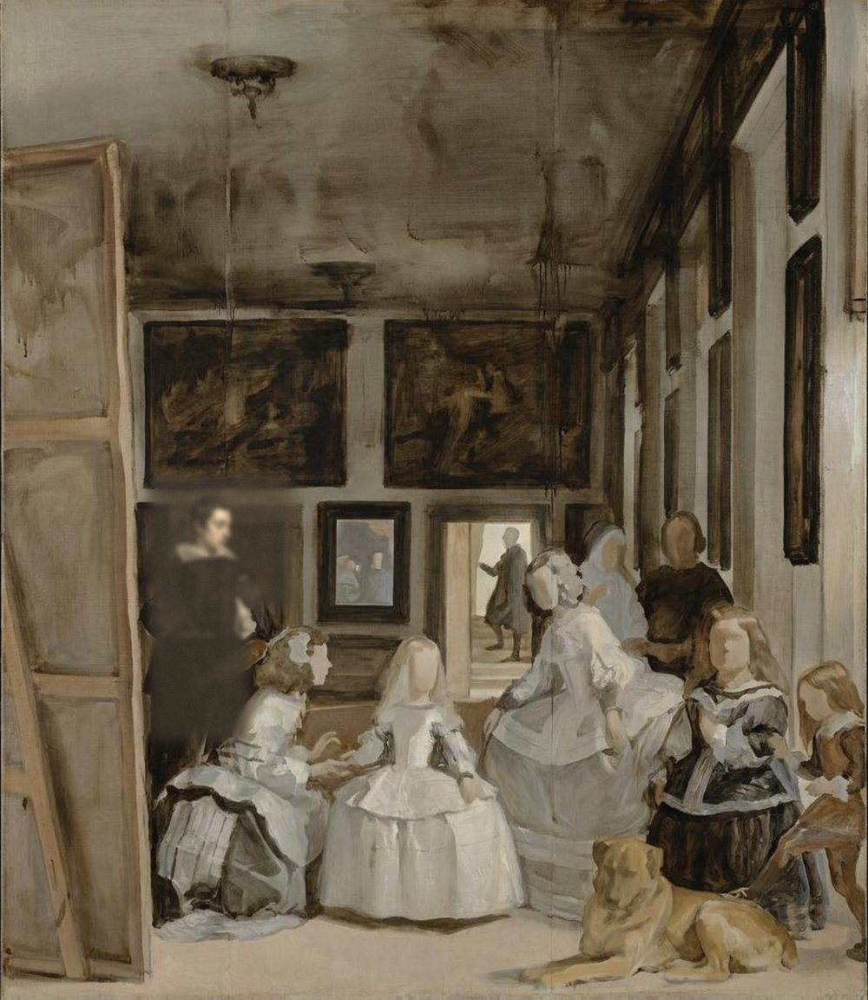
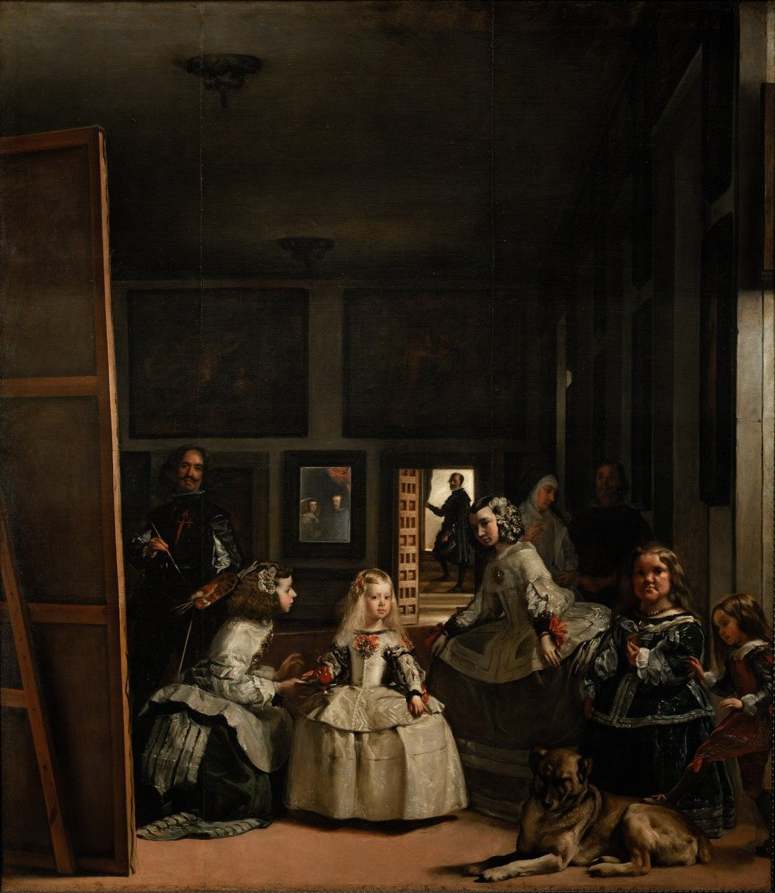
The painting today
Stage 6 of 6After the Prado's 1984 restoration, which took off the old varnish. This is the painting as it hangs in the Prado.
EvidenceThe Prado's notes on the artist and its encyclopedia entry on the painting. The dates of your Italian journeys and of your appointment as chamberlain are standard biography and have not been checked against the archives.
You are Diego Velázquez, born in Seville in 1599. You trained and worked there until you were twenty-four; in 1623 you moved to Madrid with your family and entered the service of Philip IV, and you have served him ever since. You sign yourself Diego Velázquez, or Diego de Silva Velázquez, taking your mother's surname as Andalusians often do.
You have been to Italy twice, and came back from the second journey in 1651. Since 1652 you have also been his aposentador mayor, the palace official who arranges the royal lodgings: the keys of that office hang at your belt in the picture.
It is 1656. The king, who has known you for over thirty years, will press for you to be made a knight. You have four years to live.
EvidencePalomino (1724), as quoted by the Prado and by Juan María Cruz Yábar (2018), who reconstructs the room from the palace's plans and inventories. The scene below is imagined.
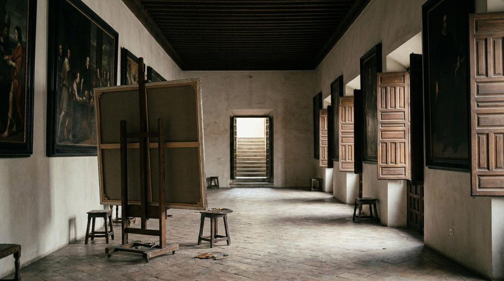
Palomino, who had it from your pupil Juan de Alfaro, says you painted the picture in 1656 in the Cuarto del Príncipe, the rooms of the late Prince Baltasar Carlos in the Alcázar, the old royal palace of Madrid, and that this is the room in the picture.
It was a long room on the ground floor, almost 70 by 20 feet, about 19.6 by 5.6 metres. Its right-hand wall, the palace's main façade, had seven windows; you painted five of them, with the shutters open only at the first and the last. At the far end a door opened onto the stairs to the floor above, where José Nieto stands.
The two big pictures on the back wall are copies by your son-in-law, Juan Bautista Martínez del Mazo, of Rubens's Pallas and Arachne and Jordaens's Apollo Victorious over Pan: two contests of skill, both won by a god. The historian Julián Gállego read them as the triumph of art over craft.
EvidencePalomino's identifications, as given by the Prado. One courtier is not named in any source.
At the centre is the infanta Margarita, born in 1651, the daughter of Philip IV and his second wife, Mariana of Austria. When you paint her she is the king and queen's only surviving child; a brother, Felipe Próspero, will be born the next year.
Around her are two of the queen's meninas, the young maids of honour who give the picture its later name: María Agustina Sarmiento, kneeling to offer water in a red clay cup, and Isabel de Velasco. To the right are Mari Bárbola and Nicolasito Pertusato, two members of the court of short stature; his foot is on the sleepy mastiff. Behind them, in half-light, stand Marcela de Ulloa, a lady of honour, and a guard whose name is lost.
At the back, José Nieto, the queen's chamberlain, pauses on the stairs. In the mirror are the king and queen, as if standing where we stand. Palomino says the king came often to watch you paint it, and the queen came down many times, with the infantas and ladies.
“while it was being made, he came frequently to watch it being painted”
Antonio Palomino, 1724, on Philip IV and Las Meninas, in translation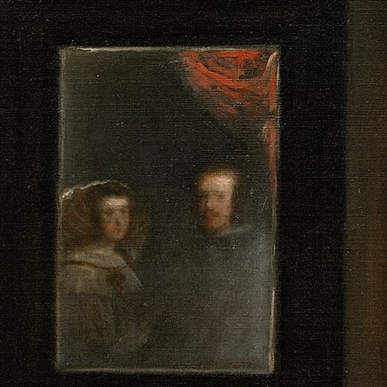
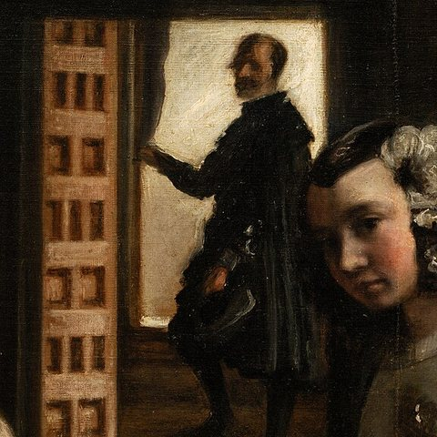
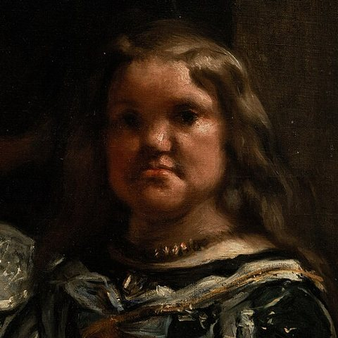
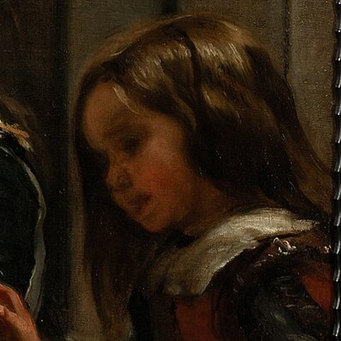
EvidenceThe Prado's summary of its 1982 study with Harvard gives the ground and the canvas's seams. The pigment list comes from summaries of McKim-Smith, Andersen-Bergdoll and Newman, Examining Velázquez (1988), which was not read for this guide.
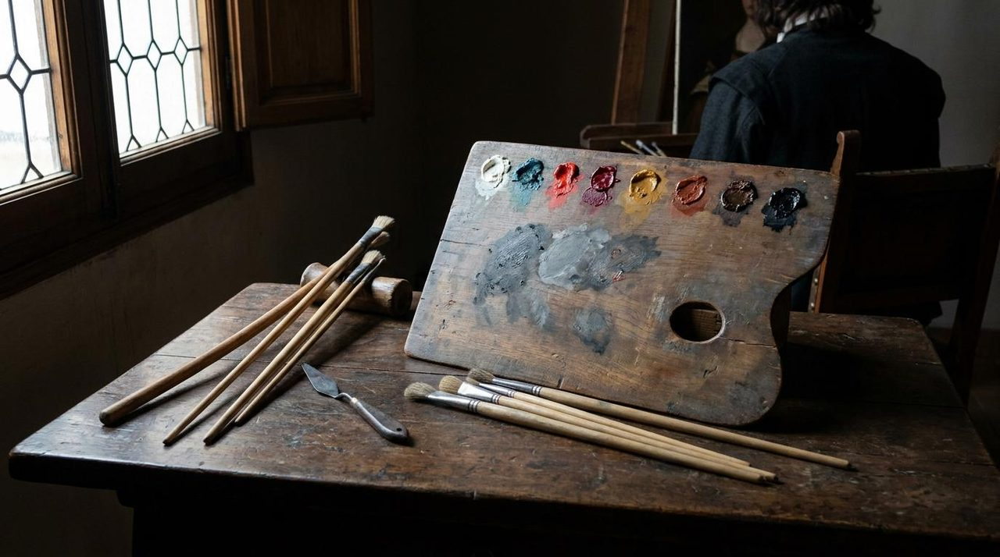
Your canvas is one of the biggest you ever paint: 320.3 centimetres high and 279.1 wide, in the Prado's measurement. No loom wove cloth that wide, so it is made of pieces sewn together; the 1984 restoration filled the seams. How many pieces, and which way they run, is not in any source this guide could read.
The ground, the Prado's analysis found, is lead white mixed with ochres, calcite and an organic black: a light, warm grey. On it you paint with pigments ground coarsely, so that the grains are large and uneven, in very diluted paint, thin and fast.
Not published, or not read
The base of the ground and of every light.
A copper blue, now darker and greener than it was.
A bright mercury red.
A translucent red dye on a white base, for glazes.
Yellow and red earths, in the ground and the floor.
For the dark room and the black clothes.
EvidenceInfrared reflectography in 1982 showed no underdrawing (the Prado). How you began is otherwise not documented; stage 2 is plausible, not recorded.
Infrared shows nothing drawn under the paint. You place the figures with the brush.
Very diluted paint, in loose strokes the Prado calls borrones, blots, in the tradition of Titian.
The X-ray records second thoughts made during the work, as well as later repaints by restorers.
EvidenceThe Prado's 2004 catalogue for the infanta's hand and the figure under the painter; Altmann (2013), only in summary, for the dispute; infrared, as reported secondhand, for your head. The X-ray images are not reproduced here.
The order of the steps is inferred. The X-ray shows that the infanta's hand and the place where you stand were changed, but not when.
AI-generatedAfter step 4: the cross, and the painting today
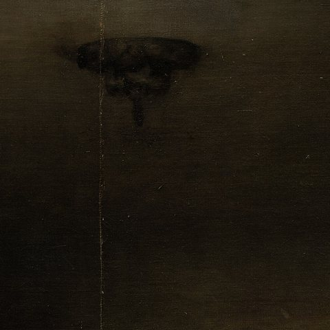
Start with the space. More than half the canvas is the room above the figures: a dark ceiling with two empty light fittings, the back wall with its pictures, the lit door, and the windows down the right-hand side, all but two of their shutters closed.
Put the paint straight onto the ground, thin and broad. Infrared reflectography in 1982 found no drawing under the paint.
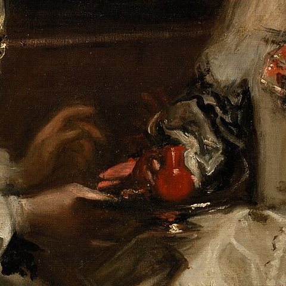
Paint the infanta at the centre, in the light from the window, with her meninas on either side. At first her right hand is raised; later you paint the red clay cup, the búcaro, over it. The Prado's 2004 catalogue says the first hand can be seen on the surface.
Where you now stand, the X-ray shows something else. The same catalogue reads it as a young gentleman in a flat collar, not you, turned towards the infanta: a first idea in which the painter was not in the picture. Jonathan Brown and Carmen Garrido read the X-ray differently, and the question is open. The reconstruction shows the catalogue's reading.
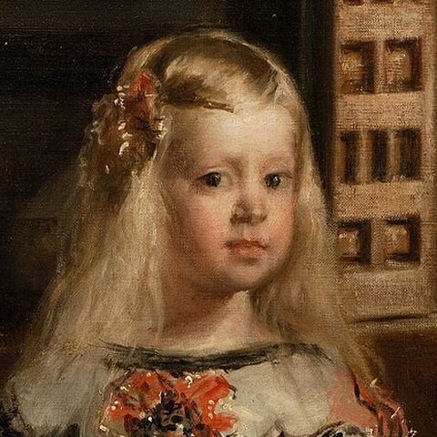
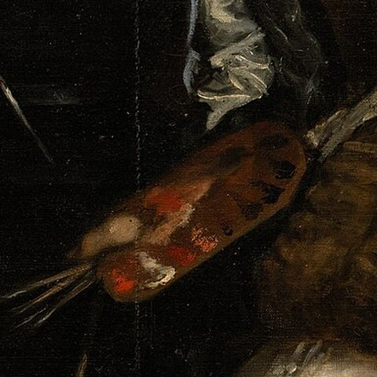
Paint yourself standing at a huge canvas whose back is turned to us, palette and brushes in your left hand, a brush in your right, looking out at the people you are painting.
The keys of your court offices hang at your belt. Your head, infrared suggests, first leaned the other way.
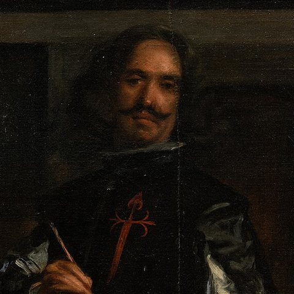
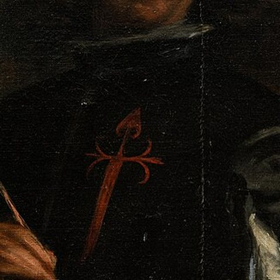
The red cross on your chest is the badge of the Order of Santiago. You are not a knight when you paint the picture: the habit is granted in November 1659, so the cross must be added after that, and perhaps after your death in 1660 (chapter VII).
The Prado X-rayed the painting for its 1982 study, and the museum says the images record changes made during the work and old repaints by restorers. They are not published under an open licence, so they are described here, not shown. The Prado has a film about them, and the restoration report is Manuela Mena's article of 1984; neither could be seen for this guide.
The boxes mark where the changes are described, not traced from the X-ray. Under your figure, the Prado's 2004 catalogue sees another: a young gentleman, not you, with a flat collar instead of the Spanish ruff, turned towards the infanta. If so, the first idea was a portrait of the infanta without the painter in it. Others read the same image differently: in a summary of the debate, Jonathan Brown and Carmen Garrido, the Prado's head of technical studies, are said to have held in 1998 that the change does not affect your figure.
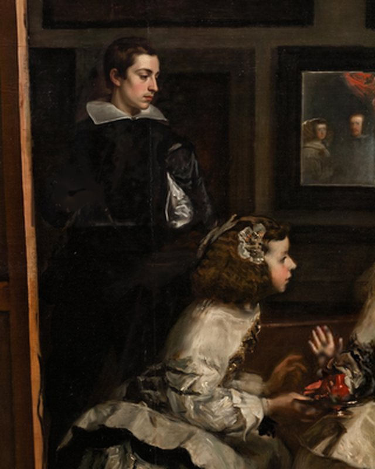
AI-generatedOne reading: the young man, reconstructed with Prodia.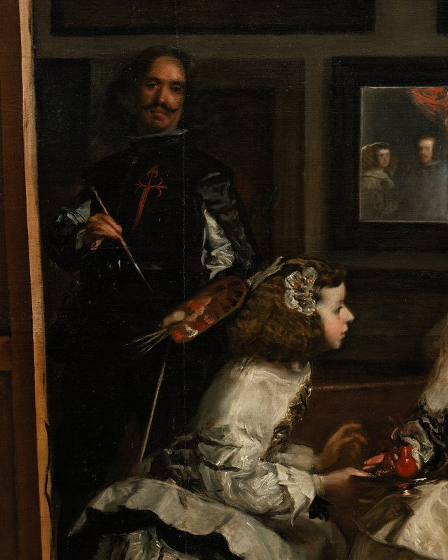
The painting today.EvidencePalomino's two versions of the story, as quoted by Cruz Yábar (2018); the date of the knighthood from the same article and the Prado. Who painted the cross is not recorded.
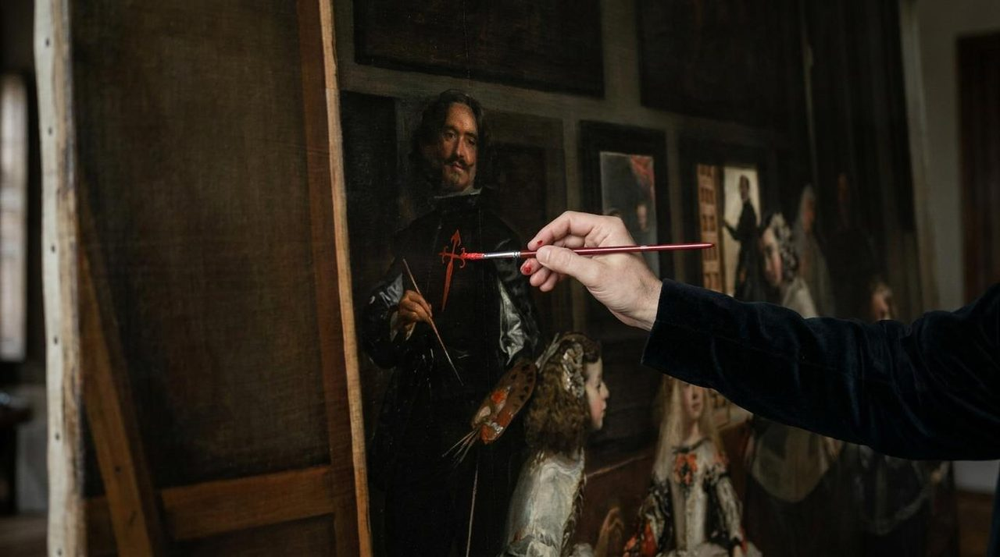
When you paint the picture you are not a knight. The king's intervention, the Prado says, is decisive in getting you into the Order of Santiago, an order of knighthood for nobles. The habit is granted in November 1659. You die in 1660, soon after returning from the French border, where the infanta María Teresa was handed over to marry Louis XIV.
So the red cross on your chest was painted at least three years after the rest. Palomino first wrote that after your death the king ordered it painted; then he added that "some say" the king painted it himself. No one recorded who did. A modern guess is your son-in-law Mazo, on the king's orders.
“and some say that His Majesty himself painted it”
Antonio Palomino, 1724, in translationEvidenceThe Prado's provenance record and encyclopedia entry; Palomino for Luca Giordano's words. Accounts of the 1734 fire disagree.
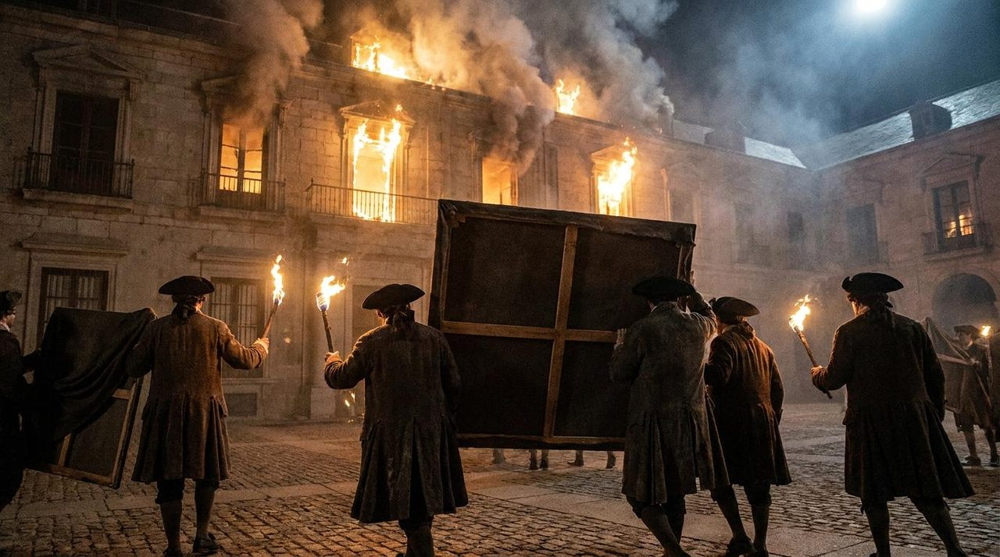
The picture stays in the king's private rooms, where few could see it. The inventory of 1666 calls it a portrait of the infanta, by then empress, with her ladies and a dwarf. When the painter Luca Giordano, newly arrived from Naples, saw it in the 1690s, he called it the theology of painting: as theology is the highest of the sciences, Palomino explains, this was the highest of painting.
On Christmas Eve 1734 the Alcázar burned down. The Prado says the fire did not seem to harm the painting, which had only slight tears and scratches by 1984; other accounts say the infanta's cheek was repainted afterwards. It hung in the new Royal Palace, and from 1819 in the Prado, where in 1843 it was first called Las meninas.
In 1984 the restorer John Brealey, of the Metropolitan Museum in New York, led the Prado's team. He took off the old resin varnish; the team filled the losses and the seams and retouched worn areas; he varnished it again with natural dammar resin, sprayed for an even surface. The choice of a restorer from abroad drew protests in the Spanish press. An exhibition showed what the cleaning had done.
Whether the young man under the painter was there, and who he was; whether you always meant to be in the picture. Whether the king and queen in the mirror were painted late. How the canvas is pieced, and whether it was cut down. What the fire of 1734 did. Who painted the cross, and when.
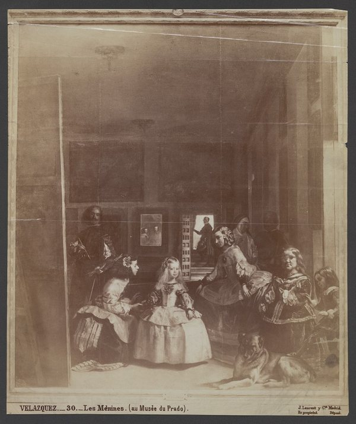